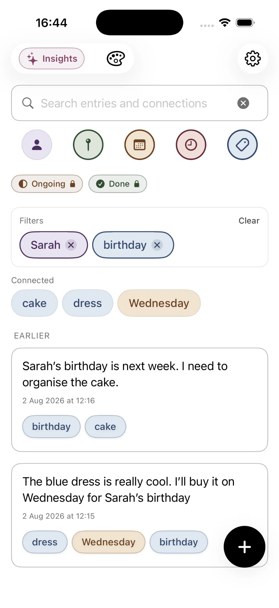
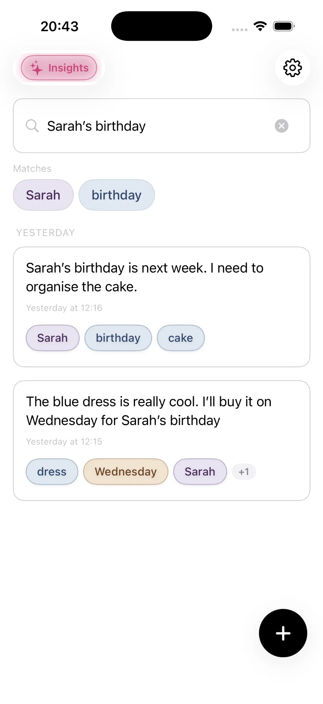
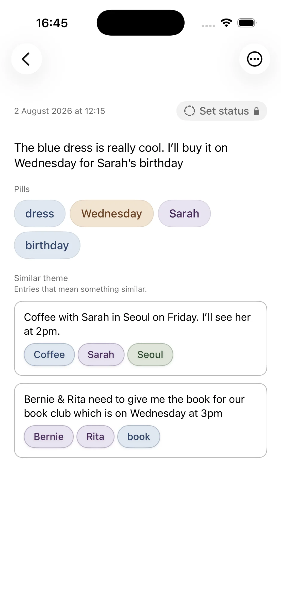
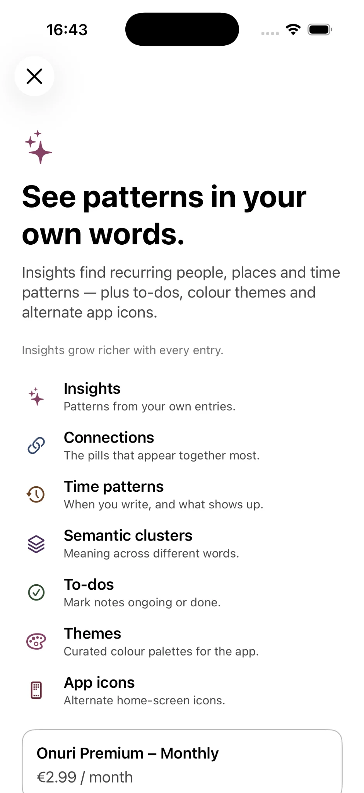
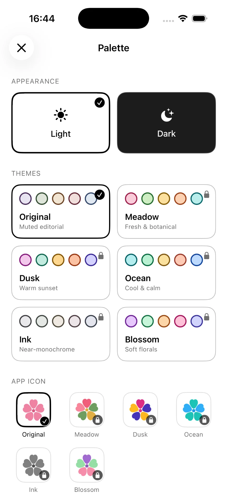

個人開発者のデザイン宣言 · 2026年
私たちは、iPhoneで最高のメモアプリを目指しています。
機能を複雑に増やすのではなく、日々の考えを気軽に書き留め、あとで見つけられ、自分のものとして守れる無料メモアプリを目指します。
「No.1」という主張ではなく、私たちの目標です。Onuri開発者 John Henry Roche より。
2026年、最高のメモアプリとは何でしょうか。私たちはまず「残しておく価値のあるメモとは何か」を考えます。
忘れたくない名前、進行中の計画、数か月後に意味が見えてくる気づき。メモアプリは、こうした日常の断片を簡単に残し、あとから役立てられるべきです。
この考えから、iPhone向けの無料メモアプリ「Onuri」を開発しています。誰にとっても唯一の「最高」があるとは考えていませんし、Onuriがその称号を得たと主張するものでもありません。ここで紹介するのは、私たちが実現したい12の設計原則です。
設計で大切にしていること
優れたメモアプリに必要だと考える12のこと。
大切なのは機能の数ではなく、日常のどんな瞬間を助けるか。Onuriが目指している体験を紹介します。
無料 · メモを無制限に作成
思いついたことを、すぐに残せる
散歩中のひらめき、会話で聞いた名前、眠る直前に思い出したこと。メモアプリは、そんな瞬間を逃さず受け止めるべきです。Onuriなら無料でメモを無制限に作成でき、書き留めたいことを気軽に残せます。
無料 · 下書きの自動保存
書きかけの言葉も大切に
途中で終わった考えにも価値があります。Onuriは下書きを自動保存するため、保存ボタンを押すことを気にせず、少し書いてあとで続きを始められます。
無料 · 人物、場所、日付、時刻、トピックの認識
まず書く。整理はあとから自然に。
たとえば京都でサラに会った記録には、人物、場所、日付、話題が含まれています。Onuriは文章の中からそうした手がかりを認識します。すべてのメモにフォルダーやタグを付けなくても、つながりが自然に見えてきます。

無料 · 全文検索、フィルター、関連キーワード
記憶はフォルダーのようには働かない
正確な言葉を覚えているときもあれば、人物や街だけを思い出すこともあります。Onuriは全文検索に加え、人物、場所、日付、時刻、トピックなどのフィルターと関連キーワードで、違う手がかりからメモを探せます。

無料 · 関連するメモ
ひとつのメモが、別の発見につながる
同じ言葉を使っていなくても、内容が似ている記録はあります。Onuriの関連エントリーは、意味が近いメモを見つける手助けをします。過去の考えが、思いがけない新しい発見につながるかもしれません。

無料 · 端末上の処理とプライベートなiCloud同期
個人的な言葉には、安心できる場所を
個人のメモには、名前、希望、迷いや日々の小さな出来事が含まれます。Onuriは端末上での処理と個人のiCloud同期を中心に設計されています。広告や追跡、アプリ内分析も行いません。個人の文章をOnuri運営のAIサーバーに送ることを前提としない設計です。
無料 · TXT・CSV書き出し
あなたの言葉は、あなたのもの
書き出し機能は、使わずに済むとしても安心につながります。OnuriはTXTとCSVへの書き出しに対応。メモのコピーを手元に残したり、別の場所で利用したりできます。
Premium · 詳細なインサイト
小さな記録から、大きな傾向が見える
書き続けると、気になることが変わってきます。何について繰り返し書いているのか、どんな人や場所が多く登場するのか。Premiumのインサイトでは、記録のペース、連続日数、繰り返し現れるテーマ、人物・場所の傾向、意味によるグループや強いつながりを確認できます。

Premium · 進行中・完了ステータス
進行中のことも、簡単に見渡せる
未完成の計画を扱うのに、複雑なタスク管理は必要ないかもしれません。Premiumの「進行中」「完了」ステータスとフィルターを使えば、取り組んでいることと終えたことをシンプルに見渡せます。
無料＋Premium · ライト／ダーク表示、テーマ、アイコン
書く場所を、自分らしく
使いやすい画面は、書くことの邪魔をしません。ライトモードとダークモードは無料。Premiumでは、ライト／ダークそれぞれに対応する5つの追加カラーテーマと、テーマに合うアプリアイコンを利用できます。

無料 · 日本語、英語、韓国語
使い慣れた言語で、自然に書ける
Onuriは日本語、英語、韓国語に対応しています。自分の生活について書く場所だからこそ、普段使う言語で自然に利用できることを大切にしています。
無料＋Premium · 無料の基本機能と任意のPremium
無料でも、しっかり役立つ
無制限のメモ、自動的なつながり、検索、基本的なプライバシー機能は無料で利用できます。Premiumでは、詳細なインサイト、ステータス、追加の外観設定を提供します。アップグレードしなくても、メモアプリとして役立つことが大切です。
「最高のメモアプリは、整理の手間を増やすものではなく、書いたメモをもっと役立つものにするべきです。」
Onuriの目指す方向
こんな方に
Onuriはあなたに合う無料メモアプリですか？
iPhoneで自由に書き、あとから検索し、つながりをたどり、個人的な文章を大切にしたい方に向けてOnuriを作っています。個人の知識をまとめる場所や、生活の記録にも使えます。
複雑なプロジェクト管理やチーム向けの大規模なワークスペースが必要なら、Onuriのシンプルな方向性は合わないかもしれません。すべての人に完璧だと主張するよりも、目的を明確にしたいと考えています。
詳しくは、自動的なつながりの仕組み、無料メモアプリのガイド、プライバシーについての解説をご覧ください。開発の背景は「Onuriについて」で紹介しています。このページでは、個々の機能を組み合わせる理由を説明します。
よくある質問
ダウンロード前に確認しておきたいこと
Onuriは本当にiPhone向けの無料メモアプリですか？
はい。無制限のメモ、自動的なつながり、検索、ライト／ダーク表示、基本的なプライバシー機能は無料です。詳細なインサイト、ステータス、追加テーマは任意のPremium機能です。
Onuriは2026年最高のメモアプリだと主張していますか？
いいえ。「最高」は利用する人の目的によって変わります。私たちはよりよいメモアプリを作る目標と、そのための設計判断を紹介しており、独立したランキングや受賞を主張していません。
すべてのメモをフォルダーに整理する必要がありますか？
いいえ。まず書き、認識された人物、場所、日付、時刻、トピックからつながりを見つける設計です。検索やフィルターを使えば、手動で細かく分類する必要はありません。
OnuriはメモをAIサーバーへ送信しますか？
自動認識は端末上の処理を中心としており、個人的なメモをOnuri運営のAIサービスへ送信する仕組みを前提としていません。プライベートな同期にはご自身のiCloudを利用します。詳しくはプライバシーガイドをご覧ください。
メモを書き出せますか？
はい。TXTとCSVで書き出し、文章のコピーを保存できます。
対応端末と言語は？
OnuriはiPhone向けネイティブアプリで、日本語、英語、韓国語に対応します。対応するAppleデバイス間で個人のiCloudアカウントを使った同期が可能です。最新の動作条件はApp Storeでご確認ください。
普通の機能一覧とは何が違いますか？
このページは設計の考え方を説明しています。まず日常の問題を示し、実装した機能と、その役立ち方を紹介します。機能の使い方は「Onuriの仕組み」をご覧ください。
次のOnuriを一緒に
最高のメモアプリは、ゴールであり、終着点ではありません。
Onuriは、一つひとつの判断を大切にしながら改良を続けています。この考え方に共感したら、無料版からお試しください。
App StoreでOnuriを無料入手 ↗